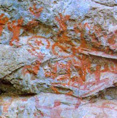 战国时代绘制的广西左江流域花山崖壁画群中，展现打铜鼓的场面比比皆是。
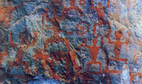宁明花山崖壁画中的古代壮族武术形象。其南拳功法——马步春功功架势实，劲猛，创立了二千余年，堪称为“中华南拳之祖”。
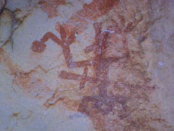
宁明花山壁画中的“耍飞驼”，是投绣球活动的雏形。
广西历史悠久，很早就有人类居住。二三万年前的旧石器时代就有“柳江人”、“麒麟山人”在这块土地上活动。属于新石器时代的早期文化，有桂林市郊甑皮岩洞穴遗址和南宁贝丘遗址等。从遗址考古发掘获得的古代文物证实，人类在新石器早期和中期，已经制造了三棱石镞和骨镞，证明传统的弓箭在广西已有一万五千年到二万年的历史了。已挖气出土的还有石斧、石奔、石戈、石矛、石铖等砍砸器、刮削器和勾刺器。这些器械用于狩猎，是生产工具，用于战斗，是长短武术器械。
“柳江人”借助这些器械在博斗中用于劈、砍、掷、射，并协同跑、跳、躲闪、进、退等动作，在闲暇中，重温这些技能，亦作为习练与娱乐。这类活动，就是广西少数民族传统体育的雏形。
春秋战国时期，广西为“百越之地”，这一时期的原始体育是按氏族组织活动的。据《壮族简史》记载：“古代人越人尚铜鼓，迄今壮族地区已发掘和发现铜鼓数百面……最大和较早的一面铜鼓，是北流县收集的云雷纹大铜鼓，面径一六五厘米，腰径一四九厘米，重达三百多公斤，体型高大，庄重古朴，是两千多年前的遗物。”显然，击打如此巨型铜鼓，是部落集体活动时才进行的。《隋书.地理志》又载：“诸僚……铸铜为大鼓，”“有鼓者号为‘都老’。”“都老”是壮族先民原始部族头人的称号，“都老”拥有的铜鼓，是政治权力的象征，因此打铜鼓活动，是在当时社会组织的指导下开展的。
公元前214年，秦王朝统一岭南，设置南海、象郡、桂林三郡。广西大部分地区属桂林郡和象郡。 定时期的政治较稳定，社会经济得到一定的发展，民族这间经济文化的交流已较广泛，这对当时的民族传统体育的发展，具有积极的意义。反映二千多年前壮族现实生活的花山崖壁画，展现了古代壮民族中已形成传统的打铜鼓、耍飞砣、射弩、赛龙舟等丰富多样的体育活动。壁画不描绘有壮族先民所沿用的环首刀、剑、棍、矛、箭镞、盾牌、头盔等图象。此外，名地也出土大量的戈、铖、矛、长短剑等各式古兵器，这说明了当时的军事体育和民间体育，已具有丰富的内容和形式。
抛绣球
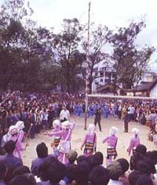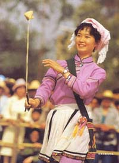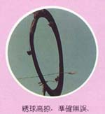
秦汉以后，中原文化逐渐向南方传播，少数民族地区逐步脱离原始社会的状态，向阶级社会发展。岭南少数民族传统体育活动，随着历史的不断前进而变化发展。形成更加丰富多采。如广西南拳的架式，系源于壮民族在长期的狩猎中，观察和研究各种野兽的站立、蹲伏、奔驰、闪展腾挪的姿态和特征，从这些动物的自然属性中，悟出龙的神韵，豹的跳劲、蛇的柔性，鹤的轻盈、虎的雄姿，把其揉入壮拳套路中。于是在壮拳的套路中先出现有龙、蛇、虎、豹、鹤五形。随着生活实践的深入，又拓展了狮、象、马、猴、彪五形，从而形成了较全面的壮拳“十形”，丰富了壮拳“艺术美”的内容，使中华民族众多的武术流派也“演其技术，习其劲捷”。又如“投秀球”，它源于二十年前的左江流域，当时它是用于狩猎和作战的古兵器——“飞砣”。到了宋代，人们将“飞砣”改制成绣花布囊，互相抛接习练和娱乐，后来又演变为男女青年表达爱情的媒介。
随着漫长的历史进程和民族风俗习惯的潜易，到了现代，民族传统体育与民族风俗习惯已相互渗透在一起，其内容形式繁花似锦，博大精深，有些传统体育项目是为了纪念民族英雄和悼念祖先的，如苗族的“爬坡竽”，是为了纪念苗族项雄孟子佑，瑶族“播公”，是为了纪念祖先盘王；有些项目已成为少数民族的风俗习惯，如壮族的“打榔”，壮族蚂拐节、瑶族达努节举行的“打铜鼓”活动，都相沿袭千年以上；更多的项目是为人们娱乐健身的需要创造的，如苗族人民喜爱的“跳芦笙”，健美的动作，配合内容丰富的歌词和优美的曲调，边唱边舞，边跳边吹，说唱、交谊、运动三位一体，既交流思想感情，又得到娱乐和健身。还有壮族的“舞狮、舞龙”、“群龙争珠”，瑶族的“打猴鼓”、“打泥脚”，叙佬族的“母鸡护蛋”、舞草龙“等等，都蕴含着丰富的思想内容和浓郁的娱乐气氛，使人从中获得健美的享受。千百年业，它们都深受各族人民的喜爱。
新中国成立后，广西少数民族传统体育有了新的发展，得到了较大的普及和提高。许多项目结合生产、结合民族节日、结合文化娱乐广泛开展，不少传统项目得到挖掘整理，制订了竞赛规则，技术上实现规范化。便如，投绣球、抢花炮、射弩、赛龙舟以及传统武术已列为全国性的比赛项目或表演项目，成为我国体坛百花园中一支支光彩夺目的奇葩。
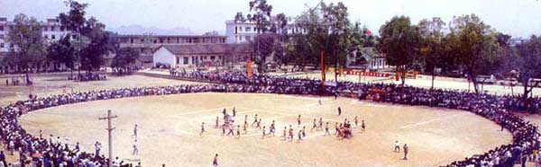抢花炮场面鸟瞰
广西少数民族传统体育的特点
广西是少数民族聚居的地区。在漫长的历史长河中创造的少数民族传统体育，保留着鲜明的地方民族特色。如瑶族，长期辗转游耕，有“南岭无山不有瑶”之说。他们在斗争中为自卫而习练的瑶拳、盘瑶拳、编架弩射和在劳动生活中创编的打铀鼓、独木滑水、播公等，都带有聚众开展，集体演练的独特的民族色彩。
流传于广西的古代民族军事体育活动，也很有民族特色。自宋至清在广西壮族地区长期实行土司制度，土府、土州、土县、土垌，都各拥有为数几百、几千以至几万的土兵，土兵是维护土司封建农奴制度的工具，但当遇到外敌侵扰，他们则是搞御外侮的军事力量。土兵平时一面务农一面训练，战时集之为兵。如壮族良兵，历代皆从民间征募，他们武技高超，威镇南疆。宋代王安石曾称为“粤右良兵，天下称最”。明朝嘉靖年间，桂西良兵曾在瓦氏夫人统帅下赴江浙前线，以七人为伍之瓦氏阵法大破倭寇，威慑敌胆，搞倭名将戚继光、谭纶、俞大猷还吸取了良兵技艺，训练他们的队伍。据胡宗 《筹海图篇、募客兵》记载：“择其骁勇者，各照良兵兵法结编为队伍……演其技艺，习其劲捷，”此外，惯使壮刀的“黑旗军”大刀队，精通“竹篙枪”术的太平军，“镇南关战役”的壮族军民，他们在抵御外敌侵略和推翻封建王朝统治中所创建的赫赫业绩，功垂武林，彪炳千古。
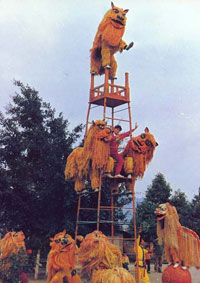人们认为舞狮可以驱邪除害，永保丰年，从此，酷爱舞狮就成沿习。
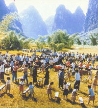每年正月初一到十五，壮家男女老少成群结伴，聚集于村寨空坪和堂前庭院，尽情地在打扁担。
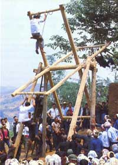壮族乡间踩风车。
广西许多少数民族传统体育项目，往往把民族文化娱乐寓于体育活动中，使民族体育具有鲜明的娱乐性质。壮族投绣球，是在每年正月初二至士五或“三月三”的歌圩节目举行，苗族的拉鼓活动是在激昂的芦笙和鼓乐伴奏下男女青年合跳的“踩堂”舞蹈中进行的，还有壮族的“投绣球抓卒”，京族的“跳竹杠”，瑶族的“打猴鼓”等等，都是趣味性很强的体育娱乐活动。这些活动不但能增强人的体质，而且使人愉身心，得到美的享受。
广西少数民族传统体育，在长期的社会实中医中，深受各族群众喜爱，从而奠定了广泛而深厚的群众基础，传统的武术活动，就有壮、瑶、苗、侗、毛南、仫佬等民族的27个拳种流派，数以千计的拳术、器械、对练、套路，在全区流传；每年春节举行的舞狮箅龙活动遍及八桂；苗族坡会开展的“爬坡杆”、“跳芦笙”等活动，参加者数以万计，据1958年《隆林县志》记载：在良乡举行的“坡会”，参加活动的人数达5万人次，邻近云南、贵州的苗族群众也跋山涉水，汇集“坡会”；具有浓郁民族色彩的“抢花炮”数百年来长盛不衰，据三江《民国志，赛会娱乐篇》记述：“花炮会，六甲人、童人皆盛行，而全县率参加，……燃炮后铁炮直冲霄汉，观众闻炮声，即以铁环为目蜂拥争取，以夺得铁环按头、二、三炮依次领奖。其友族簇拥庆贺，欢声若雷。”这些描述，真实而生动地展现了当时抢花炮的热闹场面；历史悠久的“赛龙舟”，千百年来深受广西各族人民的喜爱，每逢农历五月初五的龙舟节，众舟博击江面，河岸人山人海，锣鼓喧天，欢呼雀跃，沸腾的场在经久不息。
少数民族传统体育源远流长，有着悠久的历史、光荣的传统和丰富的内容
大量的史料证明，它在整个发展的历史长河中，与各民话的自然环境、生产特点、经济生活和风俗习惯始终紧密地结合着，是各族人民改造自然，改造社会，改革人类自身的过程中的智慧结晶，它对提高各族人民的身体健康水平起着积极的作用，展现古代壮族武术的左江花山壁画中的武士形名胜，一个个身高体壮，神态威武，这说明古壮拳对锻炼身体，强盘壮骨，提高军事素质起着显著的作用；壮族的“风车秋”、“板鞋舞”瑶族的“独木滑水”，苗族的“爬坡杆”，侗族、壮族的“抢花炮”等等，都是青少年踊跃参加的项目，通过锻炼，可以培养他们顽强、果断、坚毅、敢于进取、步伐一致和积极向上的优秀品质，还可以提高人们的力量、速度、灵敏、耐力等身体素质。
发展少数民族传统体育，对继承和发扬各族优秀的文化遗产，对增进民族团结，建设社会主义精神文明具有深远而广泛的意义，民族传统节目的“抛绣球”、“抢花包”等是很好的文化娱乐活动，开展的场面往往是：“山歌阵阵，群情沸腾”和“满场花包，彩色飞舞”。参加盛会的各族群众，欢聚在一起，他们用绣球和花包，抛结成民族友谊的彩虹。
有不少项目诸如武术、射弩、抢花炮、推竹杆、气功等，正在扎扎实实做着推向世界的基础工作，其中包括：运动基础理论的研究，技术竞赛规范化的整理，普及与提高等等。源远流长的广西少数民族传统体育，在不久的将来，必定焕发出绚丽的光彩，展现在世界人民的面前，必定为我国体育事业的发展，开拓出更加广泛美好的前景。
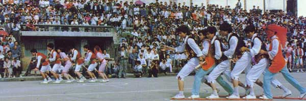板鞋舞竞技场